netkit is a lightweight, modular R package designed to simplify the analysis and visualization of complex networks, particularly in biological contexts such as protein–protein interactions, gene co-expression, and signaling networks. However, provided functions and analyses can theoretically be applied to any kind of interaction network. It provides a user-friendly interface to explore network topology, visualize annotated graphs, simulate signal diffusion, and evaluate network robustness.
Key use cases include:
Mapping metadata onto networks
Identifying hubs, bottlenecks, and communities
Simulating information flow within a network
Prioritizing seed nodes for targeted interventions
Visualizing networks with meaningful node/edge annotations
With a special scope to generate high-quality and interpretable figures suitable for publication, most of the functions generate both tabular results and diagnostic plots. The package also offers flexible network visualization options that support node/edge metadata mapping, dynamic sizing, and layout control.
The toolkit is built on igraph, but adds streamlined,
high-level functionality to perform common network analysis tasks with
minimal friction. All diagnostic plots are built on
ggplot2, allowing for flexible customization.
0. Installation
netkit can be installed from github, as follows:
# If not already installed:
install.packages("devtools")
# Install netkit from GitHub
devtools::install_github("agallinat/netkit")1. Annotate Graphs
For this tutorial we will use two different synthetic graphs
generated using igraph::sample_pa() and
igraph::sample_gnp() functions. We also generate two
data.frame objects containing simulated nodes’ and edges’
metadata to be included in the original graph.
suppressMessages(library(igraph))
set.seed(123)
# Generate synthetic graphs
g <- sample_pa(100, power = 1.5, directed = F)
V(g)$name <- as.character(1:vcount(g))
g2 <- sample_gnp(100, 0.02, directed = T)
V(g2)$name <- as.character(1:vcount(g2))
# Simulate nodes and edges metadata
nodes_info <- data.frame(node = V(g)$name,
category = sample(LETTERS, vcount(g), replace = T),
score = rnorm(vcount(g)))
edges <- as_edgelist(g)
edges_info <- data.frame(from = edges[,1], to = edges[,2], edge_score = rnorm(ecount(g)))For instance, this simulated metadata could represent gene expression
results, entity types, edge confidence scores, effect of the
interaction, or any type of information, that may be useful to include
as an igraph object. We can annotate an existing graph,
using the assign_attributes() function. Only matching nodes
and edges are updated. Warnings are issued when there are unmatched
entries.
library(netkit)
# Add metadata to an existing graph
g <- assign_attributes(g, nodes_table = nodes_info, edge_table = edges_info)
vertex_attr_names(g)
#> [1] "name" "category" "score"
edge_attr_names(g)
#> [1] "edge_score"2. Network Visualization
plot_Net() is the main visualization function. It
supports size/color mapping of nodes and edges using existing nodes’
metadata. It also allows layout control.
# In the default plot, nodes' size is mapped to degree and edges' width to betweenness
plot_Net(g)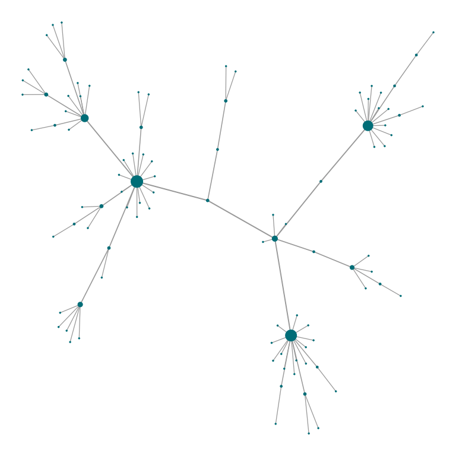
# Nodes size and edge with scalling factors can be modified at will.
plot_Net(g, edge.width.factor = 0.3, node.size.factor = 2)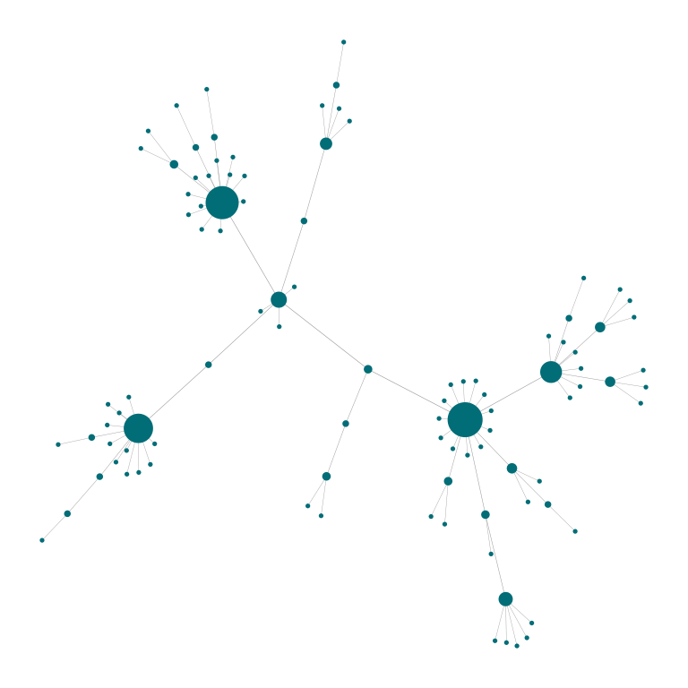
# And turned off
plot_Net(g, node.degree.map = F, edge.bw.map = F)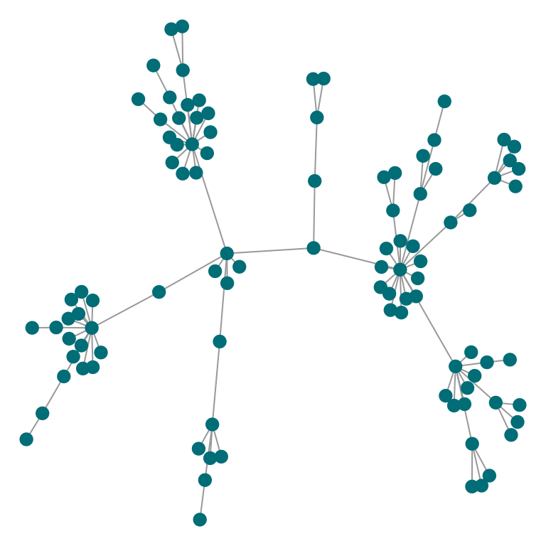
# Node colors can be mapped to existing nodes metadata
plot_Net(g, color = "score", node.degree.map = F)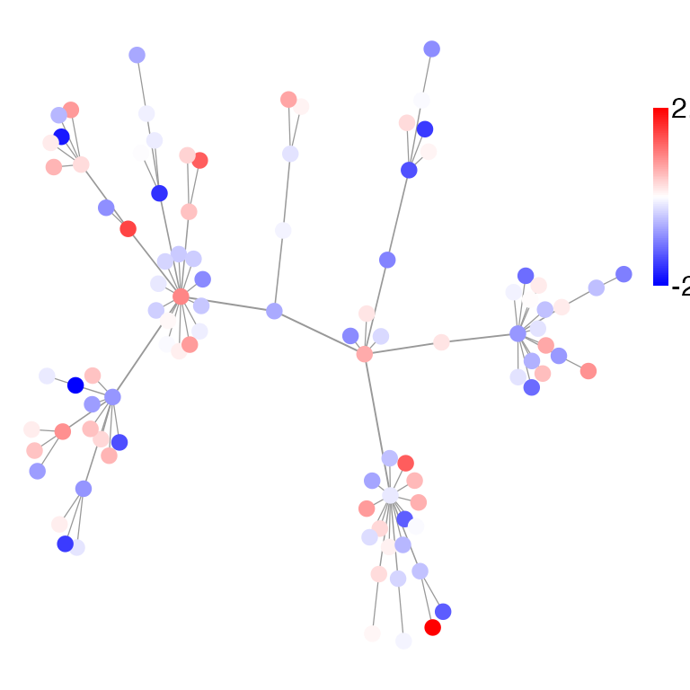
# For directed graphs, arrow sizes are also easily custimizable
plot_Net(g2, edge.width.factor = 0.5, node.size.factor = 2, edge.arrow.size = 0.3)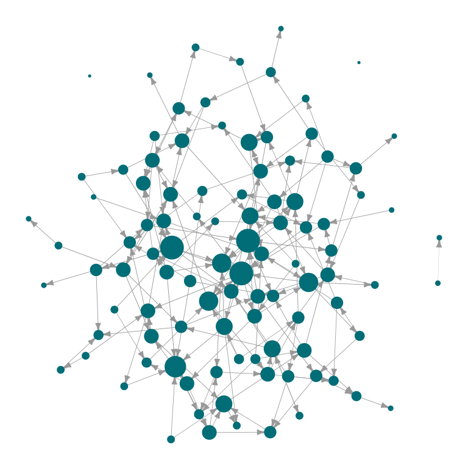
Specific nodes can also be highlighted using the function
highlight_nodes() and the nodes’ name. Highlighting method
(label, fill and/or outline) and colors can be customized at will.
Additional arguments are passed to the plot_Net()
function:
highlight_nodes(g, nodes = c("1", "2", "4"), method = c("outline", "fill"),
edge.width.factor = 0.3, node.degree.map = FALSE)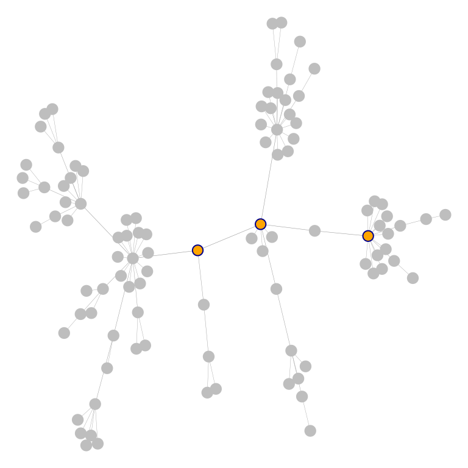
Both functions (plot_Net() and
highlight_nodes()) also allow for layout control via
layout parameter. This accepts a coordinates matrix custom
or generated by any of the layout functions available in
igraph package. A special layout option has been
implemented in netkit package to display the network as a
horizontal tree (layout_horizontal_tree()). Which is
particularly useful to show hierarchical relationships.
plot_Net(g, edge.width.factor = 0.3, node.size.factor = 2,
layout = layout_horizontal_tree(g))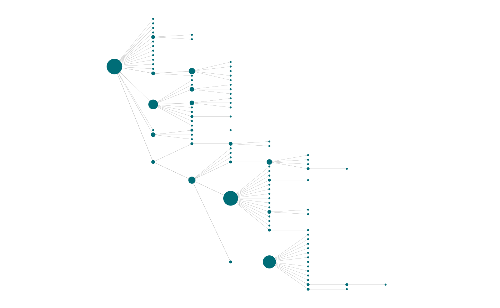
3.1. Global topology
The core functions for a global network topology analysis are
plot_CCDF(), which generates a plot of the
complementary cumulative degree distribution (CCDF),
and summarize_graph_metrics(), which calculates the
following parameters for an input graph:
- Number of nodes and edges
- Directed
TRUE/FALSE - Graph density
- Diameter and average path length of the largest connected component
- Clustering coefficient (transitivity)
- Degree assortativity
- Average degree and betweenness centrality
- Number of connected components and size of the largest connected component
- Number of single nodes
- Algebraic connectivity (second-smallest Laplacian eigenvalue)
- Degree entropy (Shannon entropy of the degree distribution)
- Gini coefficient of node degrees
- Modularity of the community structure (via Louvain algorithm)
The function compare_networks(), accepts two graphs as
input, and computes the same metrics on both, and their associated
(CCDF).
# Global topology analysis
summarize_graph_metrics(g)
#> Nodes Edges Is_directed Is_weighted Density Diameter Average_path_length
#> 1 100 99 FALSE FALSE 0.02 10 5.027273
#> Clustering_coefficient Degree_assortativity Avg_degree Avg_strength
#> 1 0 -0.4943885 1.98 1.98
#> Avg_betweenness Components Single_nodes LCC_size LCC_percent
#> 1 199.35 1 0 100 1
#> Algebraic_connectivity Degree_entropy Gini_degree Modularity
#> 1 0.01500655 1.504678 0.4341414 0.7809917
# Complementary cumulative degree distribution
# It optionally shows a power law reference distribution of chosen gamma.
plot_CCDF(g, show_PL = TRUE, PL_exponents = c(1.5))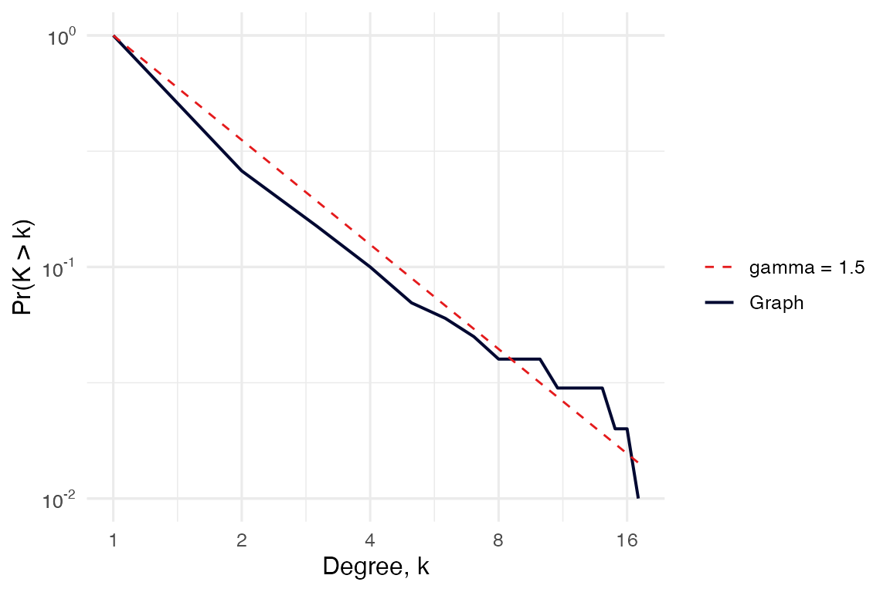
# Same analyses to compare two networks
compare_networks(g, g2)
#> <netkit result: compare_networks()>
#> $plot <ggplot> print(x$plot) to draw
#> $global_topology <data.frame> 2 x 20 | Nodes, Edges, Is_directed, Is_weighted, Densi...
#> $similarity <data.frame> 1 x 3 | jaccard_similarity, node_overlap, edge_overlap
#> $ks_test <ks.test [6]> statistic, p.value, alternative, method, data...3.2. Node-level metrics
While summarize_graph_metrics() describes the graph as a
whole, node_metrics() describes its vertices: it computes
degree, strength, betweenness, harmonic centrality, eigenvector
centrality, PageRank, coreness, local clustering, Burt’s constraint and
eccentricity in a single call, and attaches each one to the graph as a
vertex attribute.
That last part is what makes it chain. Any netkit function that
accepts a numeric vertex attribute — plot_Net(color = ),
robustness_analysis(removal_strategy = ) — can use the
results directly.
nm <- node_metrics(g, plot = FALSE)
head(nm$result)
#> # A tibble: 6 × 11
#> node degree strength betweenness harmonic eigenvector pagerank coreness
#> <chr> <dbl> <dbl> <dbl> <dbl> <dbl> <dbl> <dbl>
#> 1 1 0.0707 7 0.662 0.376 0.152 0.0301 1
#> 2 2 0.0303 3 0.543 0.358 0.283 0.0130 1
#> 3 3 0.0202 2 0.287 0.309 0.0429 0.00911 1
#> 4 4 0.141 14 0.298 0.327 0.0332 0.0653 1
#> 5 5 0.172 17 0.669 0.427 1 0.0750 1
#> 6 6 0.0404 4 0.0794 0.304 0.276 0.0194 1
#> # ℹ 3 more variables: clustering <dbl>, constraint <dbl>, eccentricity <dbl>
# Every metric is now on the graph.
setdiff(vertex_attr_names(nm$graph), c("name", "category", "score"))
#> [1] "degree" "strength" "betweenness" "harmonic" "eigenvector"
#> [6] "pagerank" "coreness" "clustering" "constraint" "eccentricity"The default diagnostic plot is a Spearman correlation heatmap of the metrics rather than a ranking, and deliberately so. The usual mistake with a table like this is to read the columns as independent evidence, when on many networks betweenness, eigenvector centrality and PageRank all correlate with degree above 0.9 — so a node that looks important by four measures may be important by one.
node_metrics(g, metrics = c("degree", "betweenness", "pagerank", "coreness"))$plot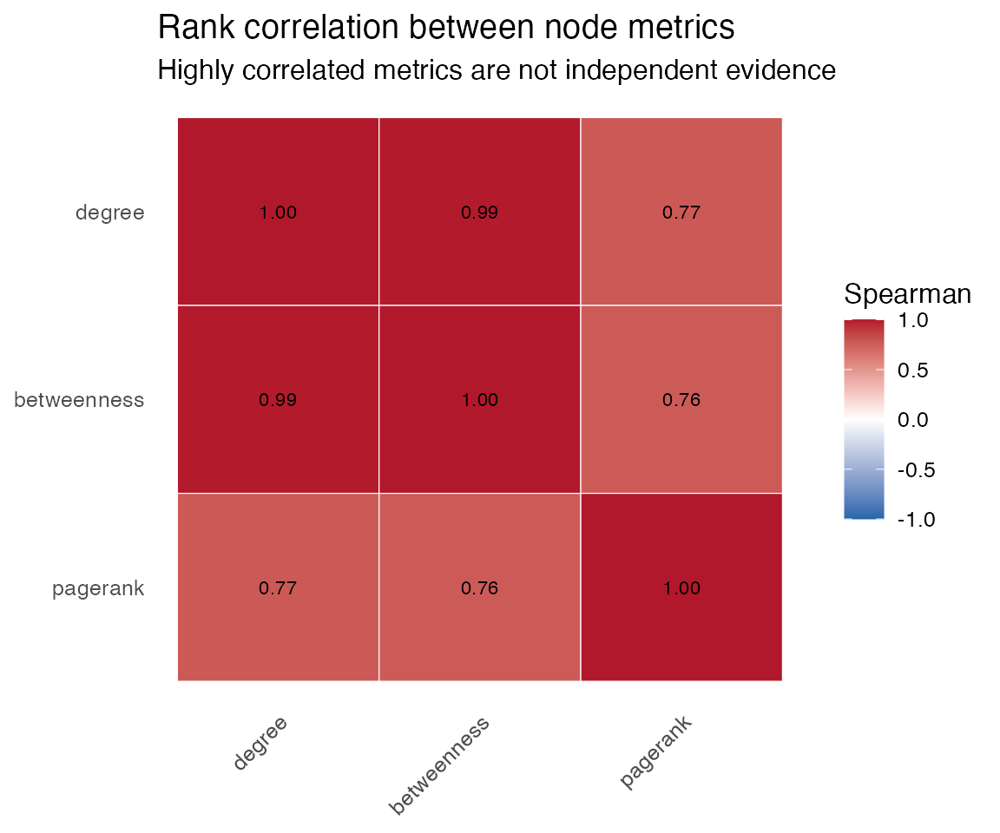
Set plot_type = "ranking" for a faceted bar chart of the
top-scoring nodes per metric instead.
3.3. Is any of this surprising?
A clustering coefficient of 0.4 or a modularity of 0.42 means nothing
on its own: random graphs with the same degree sequence routinely reach
similar values. null_model() builds a matched random
ensemble and metric_significance() scores the observed
graph against it.
The "rewire" default preserves the degree sequence
exactly by making double-edge swaps, which is almost always the
right null for a topological claim — nearly every network metric is
partly determined by the degree sequence, so a null that does not hold
it fixed mostly rediscovers that the graph is heavy-tailed.
"erdos_renyi" matches only the vertex and edge counts and
is included as the deliberate weak contrast.
# n is kept small here for speed; use 100 or more in practice.
sig <- metric_significance(g, metrics = c("Clustering_coefficient", "Modularity",
"Degree_assortativity"),
n = 30, seed = 1)
sig$result
#> # A tibble: 3 × 8
#> metric observed null_mean null_sd z p_empirical ci_lower ci_upper
#> <chr> <dbl> <dbl> <dbl> <dbl> <dbl> <dbl> <dbl>
#> 1 Clustering_coe… 0 0.101 0.0447 -2.26 0.0645 0.0277 0.176
#> 2 Modularity 0.781 0.697 0.0150 5.62 0.0323 0.673 0.725
#> 3 Degree_assorta… -0.494 -0.216 0.0422 -6.60 0.0323 -0.292 -0.141Note the floor on the p-value. Empirical p-values use the
(r + 1) / (n + 1) convention and so are never zero — with
30 null graphs the smallest attainable value is
1/31 ≈ 0.032, and no effect however large can beat it. The
method element says so explicitly:
sig$method
#> [1] "Metric significance against 30 null graphs (model 'rewire'); unweighted; two-sided empirical p-values with the (r+1)/(n+1) convention, so the smallest attainable p-value is 0.0323"The accompanying plot shows each null distribution with the observed value marked:
sig$plot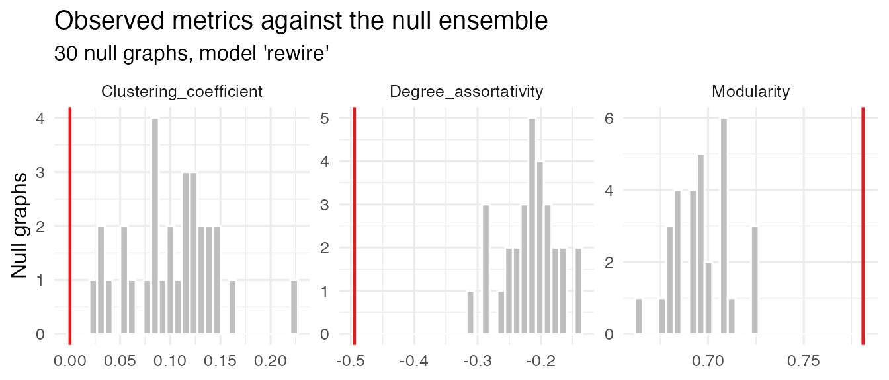
small_worldness() is the classic application of the same
machinery, reporting sigma = (C/C_rand)/(L/L_rand). Values appreciably
above 1 indicate small-world organization.
small_worldness(sample_smallworld(1, 100, 4, 0.05), n = 20, seed = 1)$result
#> # A tibble: 1 × 6
#> sigma C C_rand L L_rand n_null
#> <dbl> <dbl> <dbl> <dbl> <dbl> <int>
#> 1 5.95 0.482 0.0643 3.05 2.42 203.4. Robustness Analysis
The package implements robustness_analysis() for
simulating network robustness under targeted or random node removal,
following the framework of Albert et al.,
2000.
In this context, robustness refers to a network’s ability to maintain its connectivity and functionality when nodes are removed — either randomly (failures) or in a targeted manner (attacks). This distinction is particularly relevant in biological networks, where random failures may represent stochastic damage (e.g., mutations, degradation), while targeted attacks can simulate inhibition of key regulatory nodes or drug targets.
The function accepts the parameter removal_strategy
which defines the order of the nodes to be removed. It can be one of:
"random", "degree",
"betweenness", or the name of a numeric vertex attribute.
Custom attributes are interpreted as priority scores (higher = removed
first). At each step, the function tracks the size of the largest
connected component, allowing visualization of how rapidly the network
fragments under each scenario. This analysis is useful to evaluate
network resilience and identify critical nodes whose disruption may
disproportionately affect system integrity.
If the removal strategy is set to "random" and
n_reps > 1, a summarized data frame (with mean and SD)
is returned as summary.
# Robustness analysis
robustness_analysis(g, removal_strategy = "betweenness")
#> <netkit result: robustness_analysis()>
#>
#> $result
#> # A tibble: 50 × 6
#> rep removed removed_frac lcc_size efficiency n_components
#> <int> <int> <dbl> <dbl> <dbl> <dbl>
#> 1 1 1 0.0101 54 0.107 17
#> 2 1 2 0.0202 20 0.0587 23
#> 3 1 4 0.0404 18 0.0411 37
#> 4 1 6 0.0606 8 0.0140 58
#> 5 1 8 0.0808 7 0.0130 58
#> # ℹ 45 more rows
#>
#> $plot <ggplot> print(x$plot) to draw
#> $all_results <tbl_df> 50 x 6 | rep, removed, removed_frac, lcc_size, efficie...
#> $summary <tbl_df> 50 x 6 | rep, removed, removed_frac, lcc_size, efficie...
#> $auc <list [3]> lcc_size, efficiency, n_components3.5. Hubs
Hub nodes are defined as nodes with a particularly
high degree and betweenness centrality. Using the function
find_hubs(), we can identify these nodes using either
z-score or quantile thresholds for degree and betweenness centrality.
The function generates a diagnostic plot to visualize the classification
using a scatter plot with marginal histograms.
# Hubs detection
find_hubs(g, method = "zscore",
degree_threshold = 2.5,
betweenness_threshold = 1,
hub_names = TRUE) # to display hub nodes' label in the diagnostic plot
#> <netkit result: find_hubs()>
#> Method: Hub nodes identified by method: zscore with Degree metric threshold =
#> 2.5 and Betweenness metric threshold = 1 (unweighted)
#>
#> $result
#> # A tibble: 100 × 7
#> node degree strength betweenness degree_metric betweenness_metric is_hub
#> <chr> <dbl> <dbl> <dbl> <dbl> <dbl> <lgl>
#> 1 1 7 7 0.662 2.42 4.84 FALSE
#> 2 2 3 3 0.543 0.977 4.08 FALSE
#> 3 3 2 2 0.287 0.377 2.23 FALSE
#> 4 4 14 14 0.298 3.73 2.31 TRUE
#> 5 5 17 17 0.669 4.11 4.88 TRUE
#> # ℹ 95 more rows
#>
#> $plot <ggExtraPlot> print(x$plot) to draw
#> $graph <igraph> 100 nodes, 99 edges, undirected | vertex attrs: name, category, score, is_hubThe diagnostic plot is generated using ggplot2 with a
ggExtra layer. Additional ggplot2 parameters
or layers should be added before the plot is rendered. For this reason,
the function includes the argument gg_extra = list() which
passes comma-separated ggplot2 parameters and layers to the
plot before rendering, as follows:
# First we need to load `ggplot2` library for
suppressMessages(library(ggplot2))
#> Warning: package 'ggplot2' was built under R version 4.4.3
# Hubs detection plot customization.
# Notice all arguments in `gg_extra` are in list format, separated with commas, not `+` signs (as usual for `ggplot2`)
# To modify the color of the highlighted area in the plot, use the argument `focus_color`.
hubs_result <- find_hubs(g, method = "zscore", degree_threshold = 2.5, betweenness_threshold = 1,
focus_color = "purple",
gg_extra = list(xlim(c(-2, 6)),
ylim(c(-2, 6)),
ggtitle("Hubs detection"),
theme_minimal(),
theme(legend.position = "bottom")))
hubs_result$plot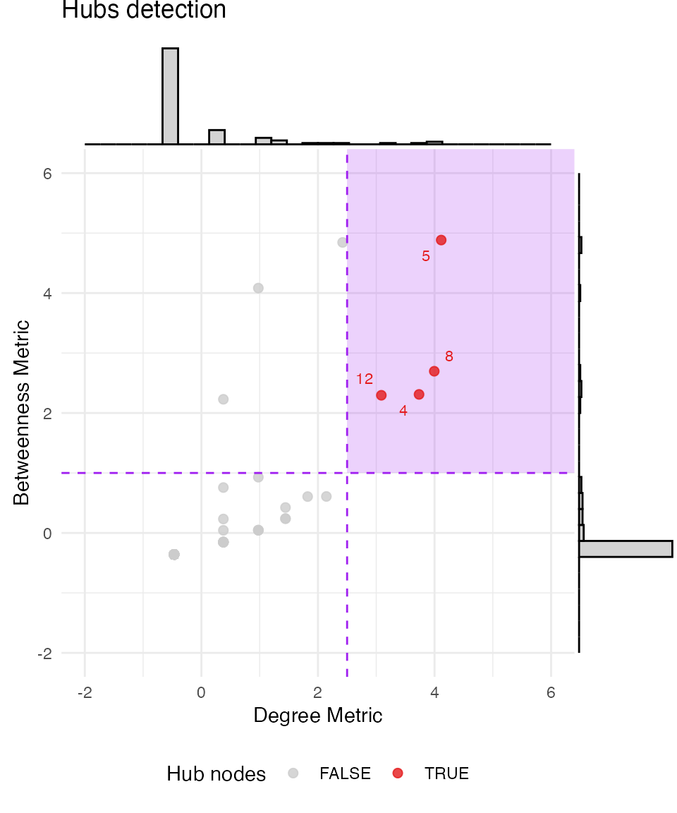
3.6. Bottlenecks
Bottlenecks are defined as nodes with a particularly
high betweenness centrality but low degree. Similarly to the
find_hubs() function, we can use
find_bottlenecks() to identify these nodes. Either z-score
or quantile thresholds can be employed for degree and betweenness
centrality thresholding. The function generates a diagnostic plot to
visualize the classification using a scatter plot with marginal
histograms.
As in find_hubs(), the function includes the argument
gg_extra = list() which passes comma-separated
ggplot2 parameters and layers to the plot before rendering,
to allow full plot customization.
# Bottlenecks detection
find_bottlenecks(g,
method = "zscore")
#> <netkit result: find_bottlenecks()>
#> Method: Bottlenecks identified by method: zscore with Degree metric threshold
#> = -1 and Betweenness metric threshold = 1 (unweighted)
#>
#> $result
#> # A tibble: 100 × 7
#> node degree strength betweenness degree_metric betweenness_metric
#> <chr> <dbl> <dbl> <dbl> <dbl> <dbl>
#> 1 1 7 7 0.662 2.42 4.84
#> 2 2 3 3 0.543 0.977 4.08
#> 3 3 2 2 0.287 0.377 2.23
#> 4 4 14 14 0.298 3.73 2.31
#> 5 5 17 17 0.669 4.11 4.88
#> # ℹ 95 more rows
#> # ℹ 1 more variable: is_bottleneck <lgl>
#>
#> $plot <ggExtraPlot> print(x$plot) to draw
#> $graph <igraph> 100 nodes, 99 edges, undirected | vertex attrs: name, category, score, is_bottleneck3.7. Calculate Roles
Beyond classical hubs and bottlenecks, the package implements the
function calculate_roles() for node role classification
based on within-module and between-module connectivity, as described by
Guimerà &
Amaral, 2005, which defines nodes’ roles using two metrics:
Within-module degree z-score: measures how well-connected a node is to others within its own module (i.e., local hubness).
Participation coefficient: quantifies how evenly a node’s links are distributed across different modules, capturing its inter-modular connectivity.
Combining these dimensions allows the classification of nodes into distinct structural roles — such as module hubs, connectors, or peripheral nodes — providing insight into how individual elements contribute to local and global network organization.
The function generates a classic ggplot2 object, thus,
the resulting plot is fully customizable with ggplot2.
# Hubs detection
calculate_roles(g,
label.size = 15,
label_region = c("R3", "R6")) # to display the label of nodes with roles 'R1' and 'R2' in the plot.
#> <netkit result: calculate_roles()>
#> Method: Guimera-Amaral roles from modules detected by 'spinglass'
#> (unweighted); hub z-score threshold = 2.5; participation boundaries R1/R2 =
#> 0.05, R2/R3 = 0.62, R3/R4 = 0.8, R5/R6 = 0.3, R6/R7 = 0.75
#>
#> $result
#> # A tibble: 100 × 5
#> node module z p role
#> <chr> <int> <dbl> <dbl> <chr>
#> 1 1 1 2.27 0.245 R2
#> 2 2 1 -0.378 0.667 R3
#> 3 3 1 -0.378 0.5 R2
#> 4 4 3 3.85 0.133 R5
#> 5 5 5 3.33 0.484 R6
#> # ℹ 95 more rows
#>
#> $plot <ggplot> print(x$plot) to draw
#> $graph <igraph> 100 nodes, 99 edges, undirected | vertex attrs: name, category, score, module, role_z, role_p...
#> $roles_definitions <data.frame> 7 x 3 | Name, Description, Condition3.8. Modules
The package also implements a function to identify
modules (communities) in a network using a variety of
community detection algorithms from the igraph package
(e.g., Louvain, Walktrap, Infomap). Optionally filters out small
modules, visualizes the detected modules, and returns induced subgraphs
for each module.
Additional parameters are passed through the plot_Net()
function, allowing full customization of the network plot.
# Find modules
find_modules(g,
method = "louvain",
edge.width.factor = 0.3, node.size.factor = 2)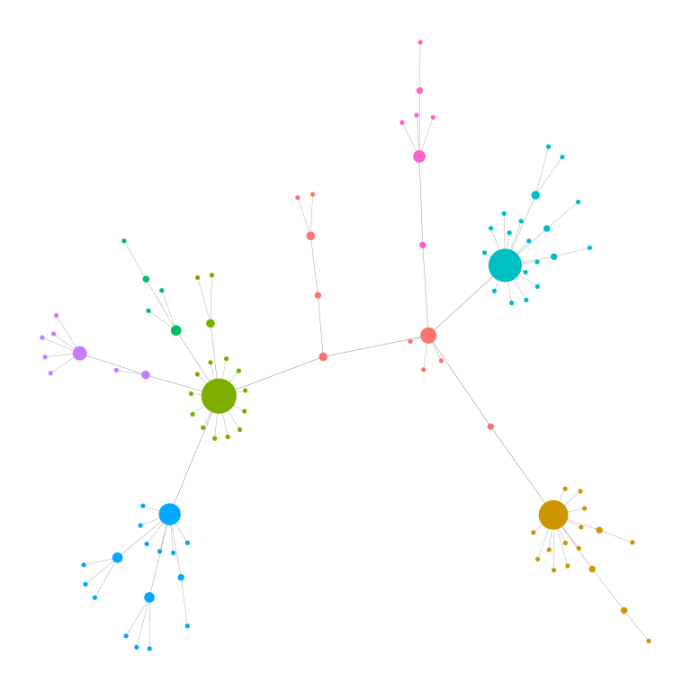
#> <netkit result: find_modules()>
#> Method: louvain
#>
#> $result
#> # A tibble: 100 × 2
#> node module
#> <chr> <int>
#> 1 1 1
#> 2 2 1
#> 3 3 1
#> 4 4 2
#> 5 5 3
#> # ℹ 95 more rows
#>
#> $module_table <tbl_df> 100 x 2 | node, module
#> $n_modules 8
#> $subgraphs NULL
#> $graph <igraph> 100 nodes, 99 edges, undirected | vertex attrs: name, category, score, module, color, label4. Extracting a subnetwork
A very common starting point is a list of nodes — differentially
expressed genes, known disease genes, a set of drug targets — and the
question of how they relate to one another.
extract_subnetwork() answers that with five strategies of
increasing ambition.
seeds <- c("1", "5", "20", "40", "60")"induced" keeps only the seeds and whatever edges run
between them: usually almost nothing, but it is the baseline the others
should be compared against. "neighbors" adds the
surrounding neighborhood, with max_degree available to
exclude promiscuous hubs — without that cap, first-neighbor expansion on
a hub-dominated network returns most of the network.
extract_subnetwork(g, seeds, method = "neighbors", order = 1,
edge.width.factor = 0.3, node.size.factor = 2)$method
#> Vertex attribute 'label' is missing, using 'name' for labels.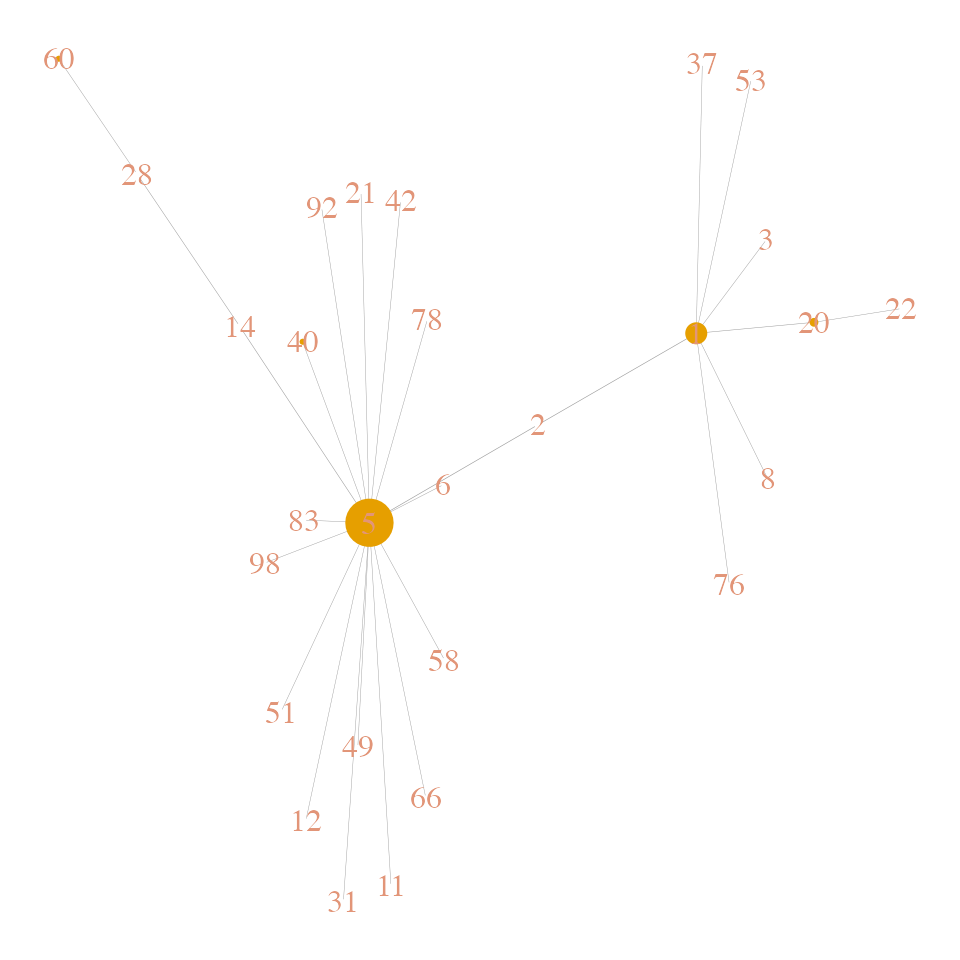
#> [1] "Subnetwork around 5 node(s) by method 'neighbors' (order = 1); unweighted; 28 nodes and 27 edges""shortest_paths" takes the union of every shortest path
between every pair of seeds — the classic “connect my gene list”.
"steiner" instead finds an approximate minimum Steiner
tree: the smallest tree that connects them all, via the
Kou–Markowsky–Berman heuristic. The union keeps every equally short
route and so grows quickly; the tree keeps one connecting structure and
is far easier to read, which usually makes it the better figure.
st <- extract_subnetwork(g, seeds, method = "steiner",
edge.width.factor = 0.3, node.size.factor = 2)
#> Vertex attribute 'label' is missing, using 'name' for labels.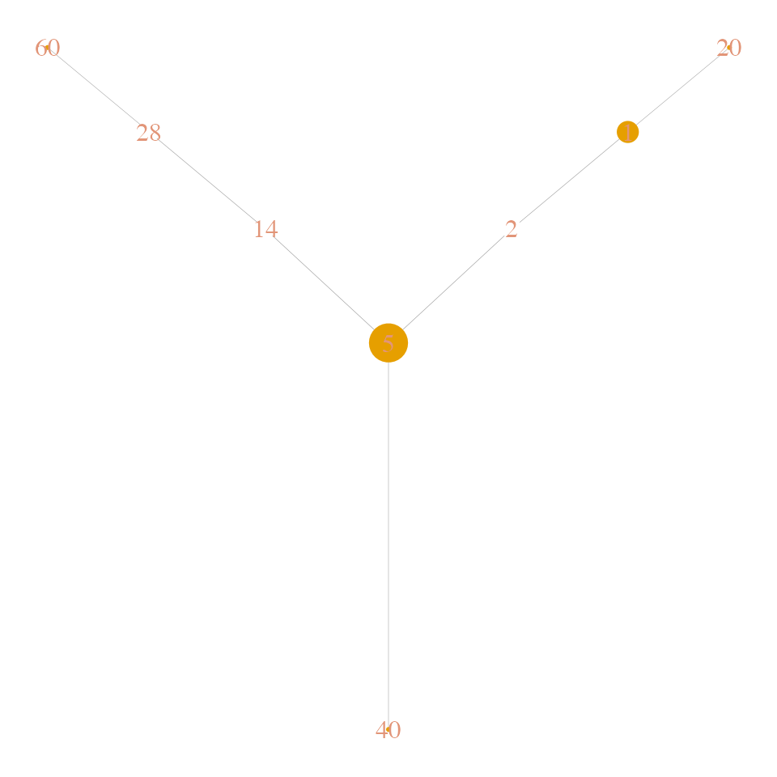
# Always a tree: vcount - 1 edges, and no leaf that is not a seed.
c(nodes = vcount(st$graph), edges = ecount(st$graph))
#> nodes edges
#> 8 7
st$result
#> # A tibble: 8 × 4
#> node reason is_seed score
#> <chr> <chr> <lgl> <dbl>
#> 1 1 seed TRUE NA
#> 2 2 steiner FALSE NA
#> 3 5 seed TRUE NA
#> 4 14 steiner FALSE NA
#> 5 20 seed TRUE NA
#> 6 28 steiner FALSE NA
#> 7 40 seed TRUE NA
#> 8 60 seed TRUE NA"diffusion" reuses the diffusion machinery of the next
section, keeping the top-scoring vertices instead:
extract_subnetwork(g, seeds, method = "diffusion", top_n = 20, plot = FALSE)$method
#> [1] "Subnetwork around 5 node(s) by method 'diffusion' (rwr, top_n = 20); unweighted; 20 nodes and 17 edges"Unlike most of netkit, these return no plot element:
like plot_Net(), find_modules() and
highlight_nodes(), they render through base graphics and so
have no plot object to hand back.
5. Information flow
Understanding how signals propagate across a network is a key step in many systems-level analyses. Information flow analysis allows users to identify nodes that are likely to be influenced by a stimulus or, conversely, nodes that can best influence a desired set of targets. For instance, in biological networks, information flow analysis is key for pathway reconstruction, to associate nodes (genes/proteins) to molecular functions or diseases, and to prioritize candidate drugs for a given target.
5.1. Network Diffusion
The functions network_diffusion() and
network_diffusion_with_pvalues() simulate the spread of
information from a set of seed nodes across the network. Both functions
supports several diffusion models
("laplacian", "heat", "rwr") and computes the propagated
signal to every node in the network.
network_diffusion_with_pvalues() is an extension of
network_diffusion() that assesses the statistical
significance of diffusion scores by comparing them to a null
distribution obtained via permutation testing (random seed sets of the
same size).
These tools are useful for identifying nodes most impacted by a set of sources, such as disease genes, drug targets, or signaling proteins.
# Diffusion analysis
# Select random genes as seed nodes
seed_nodes <- sample(vertex_attr(g, "name"), 5)
network_diffusion(g, seed_nodes = seed_nodes, method = "laplacian")
#> # A tibble: 100 × 2
#> node score
#> <chr> <dbl>
#> 1 57 0.833
#> 2 89 0.745
#> 3 10 0.690
#> 4 41 0.649
#> 5 5 0.321
#> 6 85 0.231
#> 7 50 0.229
#> 8 86 0.215
#> 9 6 0.102
#> 10 12 0.0797
#> # ℹ 90 more rows
network_diffusion_with_pvalues(g, seed_nodes = seed_nodes, method = "laplacian")
#> Running 1000 permutations with 5 random seed nodes each (future plan: sequential)...
#> Warning: package 'future' was built under R version 4.4.3
#> # A tibble: 100 × 3
#> node score p_empirical
#> <chr> <dbl> <dbl>
#> 1 57 0.833 0.000999
#> 2 89 0.745 0.000999
#> 3 10 0.690 0.000999
#> 4 41 0.649 0.000999
#> 5 5 0.321 0.000999
#> 6 85 0.231 0.000999
#> 7 50 0.229 0.000999
#> 8 86 0.215 0.000999
#> 9 11 0.0466 0.000999
#> 10 21 0.0466 0.000999
#> # ℹ 90 more rows5.2. Reverse Network Diffusion
The function greedy_seed_selection() implements a
greedy algorithm to select a set of seed nodes (of size
k) that maximize the total diffusion signal over a given set of
target nodes.
This reverse diffusion approach can be thought of as solving the inverse problem: Given a set of nodes I want to affect, which upstream nodes (seeds) should I perturb to maximally reach them?
This method is especially relevant in contexts like:
Designing combinatorial interventions to target a disease module.
Optimizing signal propagation to modulate a known gene signature.
Identifying minimal upstream regulators of observed phenotypes.
The function also includes the optional argument
candidate_nodes, a character vector of eligible nodes’
names to be considered as seeds. If NULL (default), all
non-target nodes are used.
By simulating and optimizing diffusion iteratively,
greedy_seed_selection() helps prioritize actionable nodes
in large and complex networks.
Note: Reverse diffusion is a computationally hard problem, as testing all possible combinations of seed nodes is combinatorially explosive -even in small networks-. The function solves this problem with a greedy algorithm, in which the node that most increases the total diffusion signal over the target nodes is added in each iteration (one at a time). This is an heuristic approach that while does not guarantee the absolute best seed set, it performs very well in real-world networks and lapses a reasonable time, making it ideal for exploratory and applied analyses.
# Select random genes as target nodes
target_nodes <- sample(vertex_attr(g, "name"), 5)
greedy_seed_selection(g, target_nodes = target_nodes, k = 20, method = "laplacian")
#> <netkit result: greedy_seed_selection()>
#> $selected_seeds <character [20]> 8 , 5 , 15, 44, 45
#> $final_target_score 0.5421242
#> $scores_at_each_step <double [20]> 0.1408368, 0.2329819, 0.2539576, 0.2749333, 0...
#> $plot <ggplot> print(x$plot) to drawThe generated plot is also a ggplot2 object, and thus,
fully customizable.
6. Credits and Contributions
netkit has been developed, and is maintained, by Alex
Gallinat, PhD.
Contributions are welcome! If you’d like to report a bug, suggest a feature, or improve documentation, please open an issue or submit a pull request at:
https://github.com/agallinat/netkit/issues
For larger changes, feel free to open a discussion first.